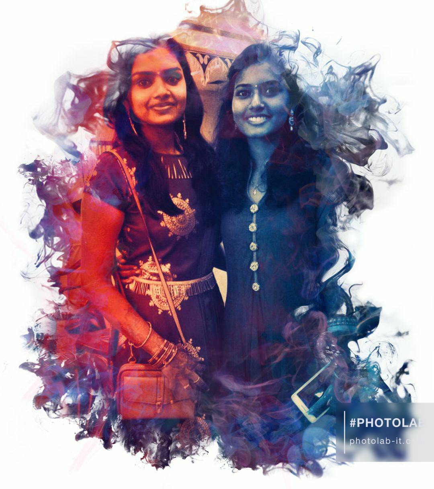

A picture is worth with a thousand words,
but the memories are priceless! ♥
Hey ji,
Hope u are safe and doing good. First I thank you for coming and being in my life. When I look back my clg life, you too have a major role. I loved the memories we had in first year. Though we didn't catched up on the very first few days, we became friends later. First year la many times I felt alone. Though vinitha and hema talked well, there were some language barriers among us. Apo ne dha en kuda vandhu otkaruva. Namma onna padipom. You shared lot of stuffs with me. Malathi mam kitta permission lam ketu, at times sanda lam pottu kuda you sat with me. Even yaru lam washroom poranga nu windows valiya papom. Thank you for making my days good. It meant a lot for me though I haven't expressed.
Second year la namma orae bench la yae irundhom. We had many sweet time. Our bench became our rough notes. We admired staff sarees and accessories(mainly DE mam). Waited together for lunch bell to ring. We have special senses to figure out whether it's gravy or 65. I love your mom's cooking (main ha that puri and gravy). Am the one who ate that most I guess. Na lab coat kondu varala nu oru nal avolo suthunom. U even got scoldings from HOD for me( sorry for that 😁). Namma rendu perum sendhu mami ha kalaichae time spend panuvom. I still have your earring which you gave me on my birthday and I'll wear that for some particular dresses. You would have seen that. Apdiyae namma second year also pochu.
Third year la we had many ups and downs. Una oru childish character ha patha enaku ne oru strong girl nu prove panna. Na down ha irukum mothu lam enaku support panni strong aakuna. You let me to cry on your shoulders. am so grateful for that. You are so bold ji. Thappu na thappu nu soluva. Whether it's staff or friends. Library mam, mess mam kita lam avolo strong ha pesuva. Hats off for that. Nadula kutty kutty ha edhachu namakulla vandha also, we forget that soon and again normal airuvom. Your bday aniku first time un vetuku vandhom. Unga vetla also elarum so sweet nu purinjudhu. Ur room la apdiyae pesitu, bubbles vechu play panitu, saptutu.. veg food nalum its so nice, that day apdiyae went well. College la enga ena nadandhalum, unuku adhu therinjurum(hehe). We gossiped the best I guess. My cousin reception ku ne vandhadhu enaku romba happy ha irundhuchu. Ik just for me you came. Thank you for that. It was so spl for me. Elamae nalla pochu na kannu padum la, apdi namma friendship la also patuchu. You know that the terms were not good among vaishu, suvaegha and me that time. We had many misunderstandings and all were hurted. Your bday ku surprise panom, suvae bday ku pizza surprise panom, mami bday ku burger surprise panom, so I too expected the same which was my fault. Ik adhu semester time but enamo expect panan from friends. I felt like am just normal to you guys and not that much important. I understand, thinking like this is so stupid. Andha bday ena dha Arvind ena surprise panalum, I had constant feeling that my friends left me. Andha oru down and friends kulla issues naala I started to isolate myself. Though enakum unukum oru issues yum ila nalum, I feel really bad that I left you alone at that time. But I didn't do purposely. Its all cuz of those feelings which I had and I drifted away from everyone. I literally lost hopes in friendship and thats why I turned everything down. Sorry for leaving you alone.
But elam within months normal aachu.Things became okay. IV mudichutu 2 times we went to marina. Titanic was our best spot. We became busy with our placaments. You guided me in coding. Training la onna irundhom. You encouraged me. Am so happy for you being placed in wipro. That late night bus travel was also lit. I think that day we travelled with peace. Tour la also we had wonderful experience. Took a lot of time to purchase a bag. Symposium la also we had best part. Thank you for making me video for my birthday. I loved your efforts for me and thats what I want from you. Even unuku idhu remember iruka nu therila. There were tasks like 'Say hy and Ill post something abt u'. Na seriously that story ku unuku hy chumma dha sonan. But your story overwhelmed me. I even have screenshot of it. I wondered like u too remember the old cute things.
Feeling so light now. On this friendhip day, I just ask you for one thing. "Keep in touch" forever. Wherever you go, whatever position you are in, 'remember me' and thats all I want from you. Stay blessed and IK your career will be great!. Hope you loved this page! and our four years journey splashed I guess. Take care, Stay safe, vetla elarum ketadha sollu. Before winding up, take a quick look at this.
Click the link below for a little surprise!
Loosekal Jakiradhai
With love,
your saetu ji.